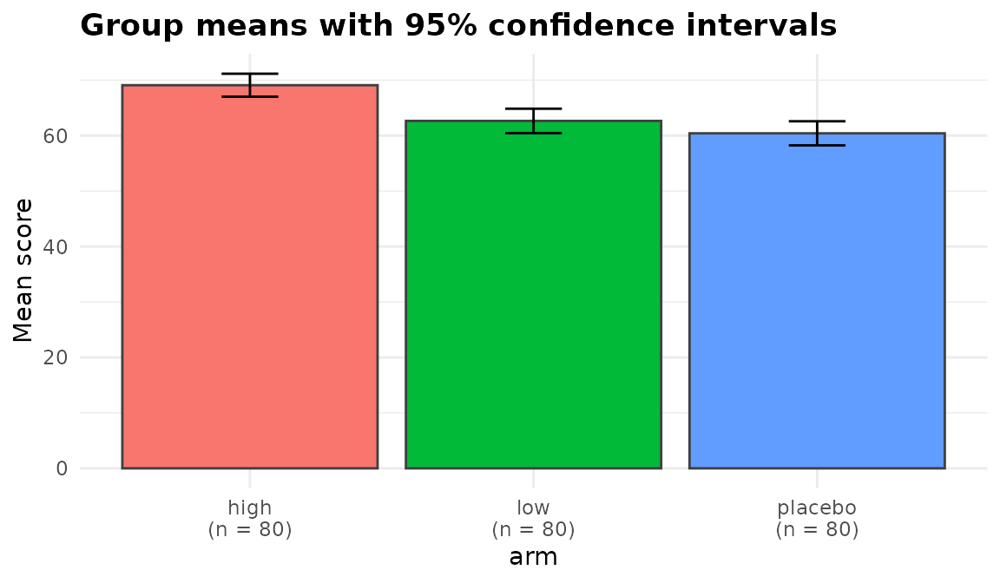

One dataset, run through the whole package. Every function names its
columns as character strings and returns the same class, so once you
have read one section you have read them all. Six take
data, response, groups; anova_manova() takes
responses (plural) and anova_rm() takes
subject, within and between,
because those designs need more than a grouping variable to describe
them.
set.seed(2024)
n <- 240
trial <- data.frame(
arm = factor(rep(c("placebo", "low", "high"), each = n / 3)),
site = factor(rep(c("north", "south"), times = n / 2)),
baseline = rnorm(n, mean = 100, sd = 12)
)
effect <- c(placebo = 0, low = 3, high = 7)[as.character(trial$arm)]
trial$score <- 0.6 * trial$baseline + effect + rnorm(n, 0, 6)
trial$improved <- rbinom(n, 1, plogis(-1.2 + 0.25 * effect))
trial$visits <- rpois(n, exp(1.1 + 0.06 * effect))
trial$weeks <- runif(n, 4, 12)
str(trial)
#> 'data.frame': 240 obs. of 7 variables:
#> $ arm : Factor w/ 3 levels "high","low","placebo": 3 3 3 3 3 3 3 3 3 3 ...
#> $ site : Factor w/ 2 levels "north","south": 1 2 1 2 1 2 1 2 1 2 ...
#> $ baseline: num 111.8 105.6 98.7 97.4 113.9 ...
#> $ score : num 68.4 69.9 67.4 65.3 62.9 ...
#> $ improved: int 0 1 0 1 0 0 0 0 0 0 ...
#> $ visits : int 0 1 5 4 4 5 3 4 3 6 ...
#> $ weeks : num 10.44 4.79 5.03 8.29 6.21 ...Comparing means
anova_welch() is the default choice for a one-way
comparison. It does not assume equal variances, which costs almost
nothing when they are equal and matters a great deal when they are
not.
fit <- anova_welch(trial, "score", "arm")
fit
#> Welch's analysis of variance
#> ----------------------------
#> Call: anova_welch(data = trial, response = "score", groups = "arm")
#> Observations used: 240
#>
#> Omnibus test
#> term statistic num_df den_df p_value
#> 1 arm 17.98 2 157.9 9.223e-08
#>
#> Plots available: means, box, qq
#> (use plot(x, which = "means"))print() shows the omnibus test and anything the function
wants you to know. summary() adds the rest.
fit$emmeans
#> group n mean sd se conf_low conf_high
#> 1 high 80 69.08961 9.299895 1.039760 67.02002 71.15920
#> 2 low 80 62.65075 9.890433 1.105784 60.44974 64.85175
#> 3 placebo 80 60.41236 9.764209 1.091672 58.23944 62.58528
fit$posthoc[, c("group1", "group2", "difference", "conf_low", "conf_high",
"p_adjusted")]
#> group1 group2 difference conf_low conf_high p_adjusted
#> 1 high low 6.438866 3.4408909 9.436840 7.533383e-05
#> 2 high placebo 8.677255 5.6995585 11.654952 1.313025e-07
#> 3 low placebo 2.238390 -0.8306466 5.307426 1.516972e-01
fit$effect_sizes
#> group1 group2 hedges_g conf_low conf_high magnitude
#> 1 high low 0.6675339 0.35110788 0.9883439 medium
#> 2 high placebo 0.9057159 0.58299337 1.2344908 large
#> 3 low placebo 0.2266841 -0.08350246 0.5383214 small
#> standardiser
#> 1 sqrt((s1^2 + s2^2) / 2)
#> 2 sqrt((s1^2 + s2^2) / 2)
#> 3 sqrt((s1^2 + s2^2) / 2)Assumption checks are chosen to suit the method. Because Welch’s test permits unequal variances, normality is assessed within each group rather than on pooled residuals:
fit$assumptions$normality
#> group n statistic p_value note
#> 1 high 80 0.9720104 0.07626062 <NA>
#> 2 low 80 0.9930800 0.94857572 <NA>
#> 3 placebo 80 0.9930686 0.94819393 <NA>
fit$assumptions$variance_ratio
#> [1] 1.131031Plots are built and returned, never drawn:
plot(fit, "means")
Adjusting for a covariate
Baseline score is a strong predictor here, so an ANCOVA is the better analysis.
anc <- anova_ancova(trial, "score", "arm", "baseline", plots = FALSE)
anc$anova
#> term sum_sq df statistic p_value
#> 1 baseline 13927.697 1 402.58717 6.335418e-53
#> 2 arm 1867.370 2 26.98864 2.783996e-11
#> 3 Residuals 8164.534 236 NA NA
anc$emmeans
#> arm estimate se df conf_low conf_high
#> 1 high 67.79682 0.6607533 236 66.49509 69.09855
#> 2 low 63.31584 0.6584393 236 62.01867 64.61301
#> 3 placebo 61.04005 0.6583481 236 59.74306 62.33704Note what $notes says:
anc$notes
#> [1] "Covariate(s) mean-centred before fitting (baseline: 100.3), so the intercept refers to the covariate mean rather than to covariate = 0. $emmeans are evaluated at the covariate mean either way."
#> [2] "Slopes are consistent with being equal across groups (p = 0.6908), so the additive model was used. A non-significant test is not proof of equal slopes, only an absence of evidence against it."Covariates are mean-centred by default. That matters as soon as the
model contains a group-by-covariate term: under sum-to-zero contrasts
the Type III row for arm then tests the group difference
at covariate = 0, and baseline is distributed
around 100, so an uncentred fit would be comparing the arms at a point
nowhere near the data.
p_of <- function(...) {
f <- anova_ancova(trial, "score", "arm", "baseline", force_interaction = TRUE,
plots = FALSE, ...)
f$anova$p_value[f$anova$term == "arm"]
}
c(centred = p_of(), uncentred = p_of(center_covariates = FALSE))
#> centred uncentred
#> 6.526767e-11 9.960978e-01The additive model fitted above is not affected — there the group row
is the same either way. $emmeans are evaluated at the
covariate mean whether or not it is centred; centring only moves the
intercept there. Use force_interaction to fix the model in
advance rather than letting a test on the same data choose it; for
groups that were not randomised, force_interaction = TRUE
is the safer choice, because a slope difference the test misses biases
the adjusted comparisons when covariate means differ between the
groups.
A binary outcome
bin <- anova_bin(trial, "improved", "arm", plots = FALSE)
bin$anova
#> term df statistic p_value
#> 1 arm 2 37.88557 5.932719e-09
bin$effect_sizes
#> term factor comparison odds_ratio conf_low conf_high se_log_or
#> 1 armlow arm low vs high 0.4434783 0.2334472 0.8311080 0.3232402
#> 2 armplacebo arm placebo vs high 0.1164179 0.0534224 0.2396148 0.3810273
#> statistic p_value ci_method
#> 1 -2.515487 1.188681e-02 profile
#> 2 -5.644134 1.660150e-08 profile
bin$emmeans
#> arm estimate se df conf_low conf_high
#> 1 high 0.6250 0.05412659 Inf 0.51454373 0.7238140
#> 2 low 0.4250 0.05526923 Inf 0.32179010 0.5351906
#> 3 placebo 0.1625 0.04124526 Inf 0.09676128 0.2600427Odds-ratio intervals are profile-likelihood by default;
ci_method = "wald" switches them. Separation, which makes
Wald intervals meaningless while glm() still reports
convergence, is detected and named in $notes.
sep <- trial
sep$improved[sep$arm == "high"] <- 1L
anova_bin(sep, "improved", "arm", plots = FALSE)$notes
#> [1] "Modelling P(improved = 1); the other level is the baseline."
#> [2] "Complete or quasi-complete separation detected: the fitted probability is numerically 0 or 1 in arm = high. The affected coefficient(s): armlow, armplacebo. An affected odds ratio is not identified: it will be enormous, its interval will be unbounded on one side, and its Wald p-value will be near 1 no matter how strong the association is; the same goes for that cell's marginal probability and the comparisons involving it. With events this sparse the likelihood-ratio omnibus test is also liberal. Consider a penalised fit such as logistf::logistf(), or collapsing the offending level."
#> [3] "Separation drives the odds ratio(s) for armlow, armplacebo to infinity or to zero, so the profile-likelihood interval is open on that side and is reported as conf_high = Inf (or conf_low = 0). Its finite end was found by profiling the likelihood directly, as stats::confint() cannot step from a diverged estimate; it is NA where the likelihood rules out no value on that side either."
#> [4] "$assumptions$dispersion is NA: the Pearson dispersion of a 0/1 response carries no information about overdispersion (in a model saturated in the cells it equals N / (N - k) whatever the data)."A count outcome, with exposure
weeks is time at risk, so it belongs in the model as a
log offset. It enters the formula rather than glm()’s
offset argument, which is what lets
emmeans see it: the marginal means below are rates per
week.
cnt <- anova_count(trial, "visits", "arm", offset = "weeks", plots = FALSE)
cnt$model_type
#> [1] "poisson"
cnt$dispersion # Pearson dispersion of the Poisson fit
#> [1] 1.360784
cnt$model_dispersion # ... and of the model actually returned
#> [1] 1.360784
cnt$emmeans
#> arm estimate se df conf_low conf_high
#> 1 high 0.5963120 0.03095898 Inf 0.5386186 0.6601851
#> 2 low 0.4011702 0.02445978 Inf 0.3559836 0.4520925
#> 3 placebo 0.3650152 0.02396442 Inf 0.3209422 0.4151405If the Pearson dispersion had exceeded the threshold, the function
would have moved to a negative binomial model and said so in
$notes. Set model to take that decision
yourself.
Two grouping variables
Every function accepts several grouping variables.
anova_welch() and anova_kw() combine them into
a single cell factor of the combinations that contain data. The
model-based functions fit them as factors: with
interaction = TRUE the marginal means and comparisons are
for the cells (a combination with no data is left out, or named in
$notes when the model estimates it by extrapolation), and
in an additive model they are reported for each factor on its own.
tw <- anova_glm(trial, "score", c("arm", "site"), interaction = TRUE,
type = "III", plots = FALSE)
tw$anova
#> term sum_sq df statistic p_value
#> 1 arm 3247.043622 2 17.22824780 1.047146e-07
#> 2 site 32.361210 1 0.34340589 5.584346e-01
#> 3 arm:site 8.636735 2 0.04582501 9.552177e-01
#> 4 Residuals 22051.232845 234 NA NAWhen you ask for type = "III" the model is
fitted under sum-to-zero contrasts. Setting
options(contrasts = ) after a model exists does not change
the contrasts stored on it, and the resulting table would be simple
effects at the reference level wearing a Type III label.
unlist(tw$model$contrasts)
#> arm site
#> "contr.sum" "contr.sum"Several outcomes at once
mv <- anova_manova(trial, c("score", "visits"), "arm",
covariates = "baseline", plots = FALSE)
mv$multivariate
#> term df statistic approx_f num_df den_df p_value
#> 1 baseline 1 0.6320296 201.81916 2 235 9.616440e-52
#> 2 arm 2 0.2758904 18.88225 4 472 2.051096e-14
mv$assumptions$mardia
#> test statistic df p_value
#> 1 Mardia skewness 13.9293058 4 0.007524134
#> 2 Mardia kurtosis 0.5355893 NA 0.592242440
mv$assumptions$box_m
#> statistic df p_value
#> 1 7.294966 6 0.2944282
mv$canonical
#> axis eigenvalue canonical_r prop_variance
#> 1 Can1 0.3797103719 0.52460481 0.99821052
#> 2 Can2 0.0006807021 0.02608139 0.00178948
mv$canonical_term
#> [1] "arm"Mardia’s tests, Box’s M and the canonical discriminant analysis are
computed directly, so none of them adds a dependency. With covariates
present they work in the space the multivariate test operates in:
Mardia’s tests on the residuals of the multivariate model, Box’s M on
the responses with the covariate effect removed, and the canonical
scores on the responses with every other model term removed. The
multivariate table is Type II or III, as type says, and
with covariates $slopes_test checks that their slopes are
the same in every group.
The follow-up univariate analyses are kept individually as well as stacked, so each response has its own model and its own emmeans grid:
mv$univariate$score$anova
#> term sum_sq df statistic p_value
#> 1 baseline 13927.697 1 402.58717 6.335418e-53
#> 2 arm 1867.370 2 26.98864 2.783996e-11
#> 3 Residuals 8164.534 236 NA NAWhen the data are not normal
kw <- anova_kw(trial, "score", "arm", plots = FALSE)
kw$anova
#> term statistic df p_value
#> 1 arm 34.25658 2 3.641488e-08
kw$posthoc
#> group1 group2 mean_rank_diff z p_value p_adjusted adjustment
#> 1 high low 45.525 4.147214 3.365457e-05 5.048185e-05 BH
#> 2 high placebo 62.025 5.650323 1.601469e-08 4.804408e-08 BH
#> 3 low placebo 16.500 1.503109 1.328110e-01 1.328110e-01 BHDunn’s test is computed from the rank sums with the standard tie
correction, so any p.adjust() method may be used and
nothing is printed to the console. Kruskal-Wallis assumes no
distribution, so no assumption check runs unless you ask for one with
diagnostics = TRUE.
Repeated measures
set.seed(11)
long <- expand.grid(id = factor(1:40), week = factor(c("w0", "w4", "w8")))
long$arm <- factor(rep(rep(c("placebo", "active"), each = 20), 3))
long$score <- 50 + 3 * as.numeric(long$week) +
2 * (long$arm == "active") + rnorm(nrow(long), 0, 4)
rm_fit <- anova_rm(long, "score", subject = "id", within = "week",
between = "arm", plots = FALSE)
rm_fit$anova
#> term num_df den_df mse statistic partial_eta_sq p_value
#> 1 arm 1.000000 38.00000 16.48565 8.08181921 0.175379778 7.155944e-03
#> 2 week 1.999827 75.99341 12.55546 42.43795129 0.527586178 4.218864e-13
#> 3 arm:week 1.999827 75.99341 12.55546 0.07873979 0.002067815 9.243425e-01
rm_fit$sphericity
#> term mauchly_w p_value gg_epsilon hf_epsilon p_gg p_hf
#> 1 week 0.9999133 0.9983974 0.9999133 1 4.218864e-13 4.209773e-13
#> 2 arm:week 0.9999133 0.9983974 0.9999133 1 9.243425e-01 9.243557e-01
#> hf_epsilon_raw
#> 1 1.055457
#> 2 1.055457Sphericity comes from the fitted model, along with the
Greenhouse-Geisser and Huynh-Feldt corrections. Subjects missing a
within-subject cell are removed before fitting and listed in
$subjects_dropped — empty above, because that design is
complete:
gappy <- long[!(long$id %in% c("1", "2") & long$week == "w4"), ]
gap_fit <- anova_rm(gappy, "score", subject = "id", within = "week",
between = "arm", plots = FALSE)
gap_fit$subjects_dropped
#> [1] "1" "2"
c(used = nrow(gap_fit$data_used), removed = gap_fit$n_removed,
supplied = nrow(gappy))
#> used removed supplied
#> 114 4 118Two arguments worth knowing about
vcov_type gives heteroskedasticity-consistent standard
errors, and they flow through to the marginal means and the comparisons
rather than stopping at the coefficient table:
anova_glm(trial, "score", "arm", vcov_type = "HC3", plots = FALSE)$emmeans$se
#> [1] 1.046320 1.112761 1.098559
anova_glm(trial, "score", "arm", plots = FALSE)$emmeans$se
#> [1] 1.079445 1.079445 1.079445weights is a column name rather than a vector, so prior
weights are subsetted along with the data and cannot misalign when a row
is dropped:
The habit worth forming
Read $notes on every fit. It is where the package
records what it decided on your behalf, what it could not compute, and
what it thinks you should know before you quote a number.
cnt$notes
#> [1] "Pearson dispersion is 1.36, at or below the threshold of 1.50, so a Poisson model was kept. A Poisson model assumes a dispersion of 1; at 1.36 (Pearson test of overdispersion: p = 0.00018) its likelihood-ratio and Wald statistics are inflated by about that factor and its standard errors are about 1.17 times too small, so its intervals are too narrow and a nominal 5% test on 1 degree of freedom rejects roughly 9% of true null hypotheses. Use model = \"quasipoisson\" or \"negbin\" when that matters."
#> [2] "Estimated marginal means are rates at weeks = 1 (one unit of exposure)."Where to go next
The package website, https://elkronos.github.io/anovakit/, has a walkthrough for every function, guides to the diagnostics and the plots, and a guide to choosing between the functions.
?anovakit_fit documents every component of the returned
object, including the ones each function adds for itself.
names(fit) lists them for any fit you have in hand.
names(mv)
#> [1] "method" "call" "model" "anova"
#> [5] "effect_sizes" "emmeans" "emmeans_object" "posthoc"
#> [9] "assumptions" "plots" "data_used" "n_removed"
#> [13] "conf_level" "notes" "univariate" "multivariate"
#> [17] "canonical" "canonical_term" "slopes_test" "covariate_means"
#> [21] "test"Each function’s own help page covers the arguments this vignette did
not reach — reference and success on
anova_bin(), model and
overdispersion_threshold on anova_count(),
correction and emm_specs on
anova_rm(), test and assumptions
on anova_manova(). All of them are optional, and all of
them have defaults the functions record in $notes when they
matter.